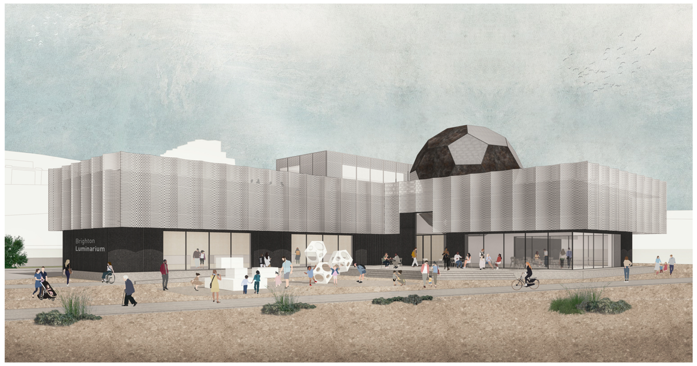

Motivation
The motivation for building the Brighton Luminarium at the Black Rock site are as follows:
- Science centres have a proven track record of being popular and commercially successful across the UK (see the tables on page 8 and 10), with visitors consisting of school groups and local, national and international tourists.
- Be a major tourist attraction, attracting over 300,000 visitors per year (as do other science centres across the country) with unique, inspiring architecture. Over 20 million people visit UK science centres each year, yet the nearest to Brighton is a 45-minute drive away.
- It will be a unique attraction to showcase Brighton, consisting of the first Quantum Museum in the world. Innovative architecture, exhibits and interactives will create a memorable and exciting day out for tourists, families and school groups alike.
- Based on visitor numbers at similar venues around the UK (see table on page 8), we would expect at least 300,000 visitors to the Brighton Luminarium per annum.
- Brighton’s Palace Pier, 2km away from Black Rock, is the most popular UK attraction outside London, with almost 5 million visitors each year.
- Volk’s Electric Railway, a popular heritage attraction with over 150,000 journeys each year, would act as an accessible link between the Luminarium, Palace Pier & Aquarium.
- The Brighton Luminarium would benefit local school children, especially those in the socio-economically deprived coastal communities, by supporting science teaching in schools and colleges, providing curriculum enriching activities in state-of-the-art classrooms for all ages. Novel demonstrations and activities using specialist equipment that is rarely available in schools (such as expensive thermal cameras) will help inspire the next generation to study science and technology subjects.
- Provide a unique venue hire and conference facility, with the classrooms being available for hire as event venues outside of school hours.
- Showcase and promote Brighton’s scientific, digital & creative industries, and raise awareness of Brighton’s world-leading scientific research at its two universities (including Nobel Prize winning research), and the city’s forward-looking ethos.
- Regenerate the Black Rock area.
The unique location at Black Rock will attract visitors from other nearby attractions, such as Brighton’s Palace Pier just 2km away (the 5th most visited attraction in the UK, with 4.9M visitors in 2019) and the Volk’s Electric Railway (with over 150,000 journeys per year). The addition of a new year-round tourist destination in Brighton will also help the city reach a critical number of attractions required to encourage the large number of day and weekend visitors to stay longer in Brighton, thus benefitting the wider local economy.